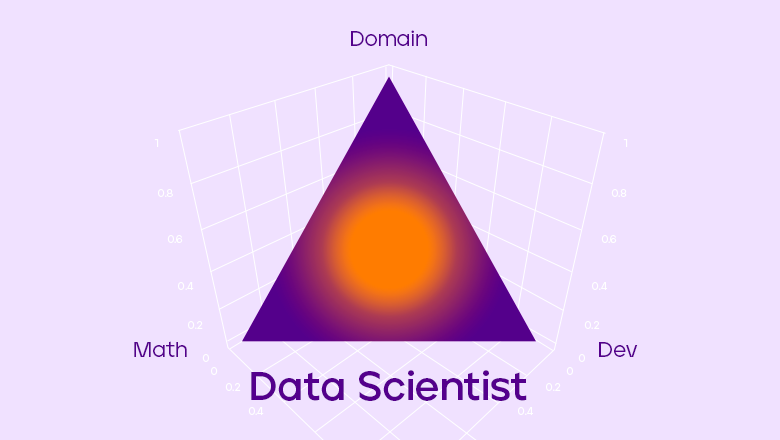
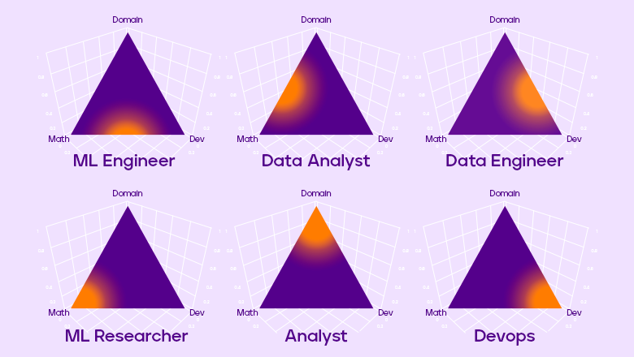

miwgan 28 мая 2021 в 14:10
,
Все что вы (не) хотели знать о Data Science
Блог компании Ситимобил
,
Data Mining*
,
Big Data*
,
Машинное обучени*
,
Карьера в IT-индустрии
Всем привет! Меня зовут Михаил Дьячков, и в Ситимобил я занимаюсь анализом данных и машинным обучением.
Сегодня я хочу поговорить о Data Science: что же это вообще такое в глазах кандидатов, работодателей и экспертов;
о несовпадении ожиданий, грейдах и собеседованиях, а также о том, какие задачи решают дата саентисты в
Ситимобил.Всем привет! Меня зовут Михаил Дьячков, и в Ситимобил я занимаюсь анализом данных и
машинным обучением. Сегодня я хочу поговорить о Data Science: что же это вообще такое в глазах кандидатов,
работодателей и экспертов; о несовпадении ожиданий, грейдах и собеседованиях, а также о том, какие задачи решают
дата саентисты в Ситимобил.
Что такое Data Science?
Data science (Наука о данных) — это дисциплина, которая позволяет сделать данные полезными.
Я думаю, что если найти пересечение различных определений что же такое Data Science, то им будет лишь
одно слово — данные. Всё это говорит о том, что широта применения Data Science огромна. Согласитесь,
но ведь в этом нет ничего хорошего ни для кого: ни для вас, ни для бизнеса. Эта широта не дает никакой
информации о вашей потенциальной деятельности. Ведь с данными можно делать всё, что угодно. Можно
строить сложные отчеты или «шатать» таблички с помощью SQL. Можно предсказывать спрос на такси
константой или строить сложные математические модели динамического ценообразования. А еще можно
настроить поточную обработку данных для высоконагруженных сервисов, работающих в режиме реального времени.
А вообще, причем здесь слово «наука»? Безусловно, под капотом у Data Science серьезнейший математический
аппарат: теория оптимизации, линейная алгебра, математическая статистика и другие области математики. Но
настоящим академическим трудом занимаются единицы. Бизнесу нужны не научные труды, а решение проблем.
Лишь гиганты могут позволить себе штат сотрудников, которые будут только и делать, что изучать и писать научные
труды, придумывать новые и улучшать текущие алгоритмы и методы машинного обучения.
К сожалению, многие эксперты в этой области на разных мероприятиях зачастую связывают Data Science в первую
очередь с построением моделей с помощью алгоритмов машинного обучения и довольно редко рассказывают самое
важное, по-моему, — откуда возникла потребность в той или иной задаче, как она была сформулирована на
«математическом языке», как это всё реализовано в эксплуатации, как провести честный эксперимент, чтобы
правильно оценить бизнес-эффект.
Кто такой Data Scientist?
Когда мы поняли, что ничего не поняли, стоит поговорить о data scientist ах — специалистах по анализу данных.
Одни считают, что эта должность подразумевает построение нейросетей в Jupyter Notebooke.
Другие ждут от таких специалистов, что те придут и будут закрывать все задачи «под ключ». А третьи просто хотят
иметь в штате таких модных ребят. Такое разное понимание должности или непонимание вовсе может навредить
при найме и вам, как кандидату, и компании.
Очень хорошую аналогию с Computer Science привел Валерий Бабушкин в своем докладе
«Почему вы никогда не наймете дата саентиста». Постараюсь кратко ее передать.
Computer Science — некоторая область тесно связанных между собой дисциплин, но при этом
почему-то никто не ищет на работу Computer Scientista. На работу ищут разработчика, тестировщика, DevOpsов,
архитекторов. Даже разработчика ищут frontend- и backend-разработчиков, вплоть до того, что ищут backend-
разработчика на C++. Почему это хорошо? Потому что даже из названия вакансии на 90 % понятно, чем будет
занят backend-разработчик на C++. Это дает довольно много информации и снижает энтропию. А если вы
вдруг ищете Computer Scientista, то по-русски это что, компьютерщик? Это что-то из девяностых или нулевых.
«У нас сломался принтер, позовите компьютерщика».
Из всего этого вырисовывается проблема. Если сходить на 10 собеседований, даже не обязательно в
разные компании, в которых ищут Data Scientist’a, то вы поймете, что на каждом собеседовании от вас будут
ожидать совершенно разного, и в конечном итоге у вас будут совершенно разные задачи. Где-то
вам предложат в рамках ИИ-трансформации 200 Excel-файлов. В другом месте предложат поднять кластер
на несколько петабайт. На третьем собеседовании вам расскажут, что ожидают от вас визуализацию метрик
в Tableau. На четвёртом вас попросят построить real-time рекомендательную систему, которая будет
работать под нагрузкой в несколько тысяч запросов в секунду. На пятом собеседовании будут задачи по
компьютерному зрению, а на шестом придётся писать сложные SQL-скрипты. В седьмой компании вас заставят читать
статьи, строить красивые Jupyter notebook’и и писать какие-то прогнозы. А где-то ещё и собрать эти
расчеты в Docker-контейнер, и с помощью Kubernetes развернуть свой сервис на много машин.
Налицо проблема несовпадения ожиданий у кандидата и работодателя. Она в первую очередь касается
неопытных ребят, которые думают, что они, наконец-то, попадут в мир Data Science, придут на работу и будут
писать .fit() .predict() на уже готовеньком датасете.
Но проходит какое-то время и наступает суровая реальность: оказывается, что прежде чем обучать
модели и подбирать гиперпараметры, нужно сделать очень много чего. Например, пообщаться с бизнесом и понять,
какая же у них на самом деле головная боль, затем сформулировать эту боль на математическом языке, найти
данные для задачи, очистить их, подумать над признаками, собрать модели, обернуть всё это в MLflow, положить
в Docker-контейнер, оценить потенциальные нагрузки и отправить в эксплуатацию. Это можно сравнить с
ситуацией, когда у вас спрашивают: «Ягоду будете?», вы отвечаете: «Да» и получаете арбуз — это ведь
тоже ягода.
Как решать проблему несовпадения ожиданий?
Алексей Натекин в своем докладе «Чем отличаются data analyst, data engineer и data scientist» нарисовал
картинку с распределением Дирихле, то есть с вероятностью вероятностей.

Предположим, что в Data Science существуют три основные компетенции:
-
Математика. Теоретические знания алгоритмов машинного обучения, и математическая
статистика для проверки разных статистических гипотез и обработки результатов, а также
любые другие фундаментальные знания, которые будут важны в вашей предметной области.
-
Разработка. Всё, что связано с разработкой, инженерными составляющими проекта,
DevOps, SysOps, SRE, и прочее.
-
Предметная область. Навыки коммуникации с коллегами и бизнесом, чтобы понимать,
какую проблему они хотят решить, на какие вопросы ответить.
И Data Scientist в этой
парадигме — это некоторое наблюдение из нашего распределения Дирихле.
Но с помощью этого распределения можно ввести несколько новых должностей, которые будут давать более
ясное представление о вашей потенциальной деятельности. Рассмотрим несколько из них.
И Data Scientist в этой парадигме — это некоторое наблюдение из нашего распределения Дирихле. Но
с помощью этого распределения можно ввести несколько новых должностей, которые будут давать более
ясное представление о вашей потенциальной деятельности. Рассмотрим несколько из них.

Если вы ищете работу на позицию Machine Learning Engineer, то, скорее всего,
будете заниматься введением в эксплуатацию моделей машинного обучения и поддерживать их в актуальном
состоянии. Для этого вам потребуются навыки и знания в области алгоритмов машинного обучения, ну и, конечно,
разработки.
Если вы аналитик данных, то, вероятно, вы будете заниматься проверкой статистических
гипотез, проектировать и проводить эксперименты. Для этого вам требуются фундаментальные знания
математической статистики, а также необходимо держать руку на пульсе бизнеса.
Дата-инженер — это человек, который занимается ETL-процессами, архитектурой
хранилища, составляет витрины и поддерживает их, организовывает потоковую обработку данных.
Machine Learning Researcher занимается исследовательской работой. Пишет и изучает
статьи, придумывает новые математические методы. Таких позиций в России довольно мало, да и встречаются
они, как правило, в крупных компаниях, которые могут себе это позволить.
Аналитик — это человек, который отвечает на вопросы бизнеса, и его плотность
вероятности приходится на предметную область.
Наконец, DevOps максимально сосредоточен на разработке и развёртывании вашего
кода в продакшене.
Junior/Middle/Senior/Team Lead/...
Попробуем коротко сформулировать профиль человека, который будет находиться на каждом из грейдов в мире
Data Science. Не стоит забывать, что от компании к компании уровень компетенций для каждого из грейдов
может довольно сильно отличаться.
Junior Data Scientist